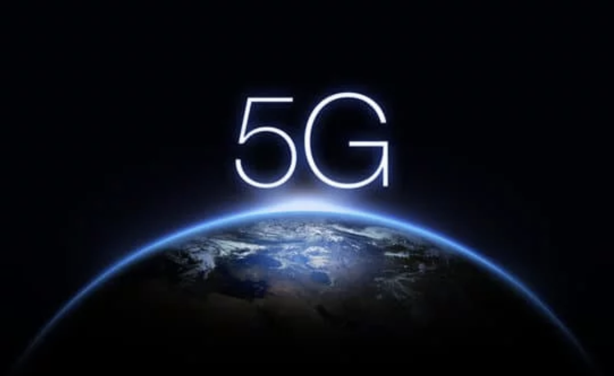
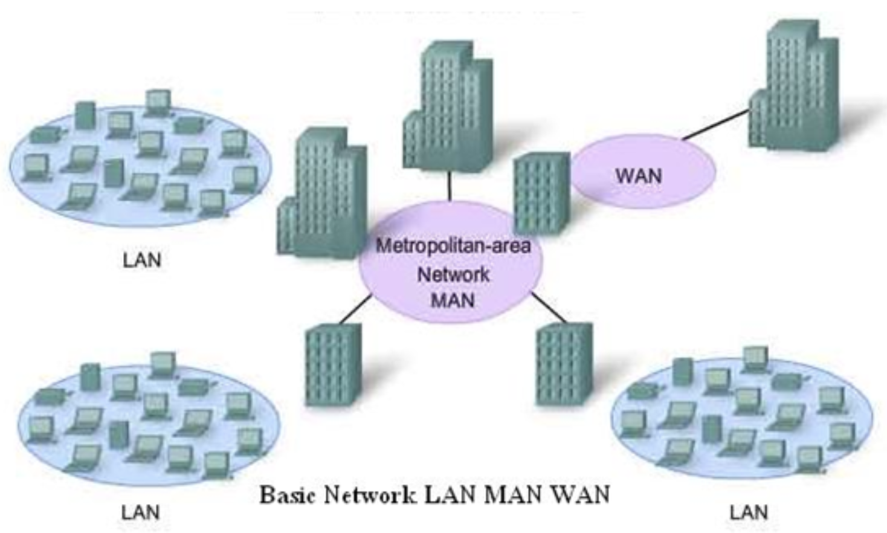

[科技] 5G誰會最大贏家？| The Latest Winner in 5G Generation
Blog URL: https://drive.google.com/drive/folders/1b0SSbMex7Z5_a2Nqwj3BETH4bbJfG6Qd
Status: Published
今天的分享主來自<得到 App> 吳軍 | 前沿科技，談的是5G誰是大贏。在開始之前先用通信歷史來鋪陳，談到過去什麼是高大尚的產品，後來沒有競爭力失去光環。文後也提供解方：鼓勵透過”信息熵”來做批判性思考，認為5G的未是必靠網路的大融合

▌用歷史看5G：從Internet → moblie → 5G + IoT
走過網際網路時代，設備製造商，包括生產手機的和通信設備商，其實都已經賺了個盆滿缽滿。僅 華為一家，2018年的營業額就超過了千億美元，幾乎抵得上我們所說的BAT(Baidu, Alibaba, Tencent)三家的總和。
Apple也是靠著手機成為了全球收入最高且最賺錢的公司。在此之前網路時代剛來臨時，網絡設備製造商Cisco曾經是全球最為炙手可熱的公司。每個大時代下都會有相應因的巨頭產生 ，因此，5G時代在未來也同樣會出現大量的製造IoT設備的企業，成為5G的贏家。
但是，這裡面可能有一個”坑”，大家要非常小心。
那就是不具有太多技術含量的所謂智慧硬體其實不值錢，比如說，製造低端傳感器的企業，製造非智能攝影機的企業，製造RFID晶片和讀寫器的企業，等等。
▌它是不是只有充電器等級？
這個“坑”是什麼？這些企業就如同在 PC時代製造機箱或電源供應器，智慧手機時代，製造充電器的企業一樣。當這些低端硬體數量增加後，單個產品的價格還會下降。20年前你看那些產品和技術覺得很高大上，5年後它們就是充電器的技術含量。在前兩代網路發展中受益的設備製造商，都是做系統的。那為什麼要做系統呢?
做好一個系統是有難度的，因為系統的表現不等於部分之和， 只有那些有本事做到整體大於部分和的企業， 才能在系統這個層面贏得競爭力。
今天這個趨勢其實已經可以看出點端倪，中國過去有不少生產普通攝影機的企業，都沒有受益於中國監控產業的發展，它們甚至將攝影機白白送給銀行或者一些要驗證身份的企業使用，以換取極微薄的服務費或者一點點數據。
而真正掙到錢，而且受到資本市場追捧的，是製造具有目標識別功能的智慧攝影機的企業。一個智慧攝像頭的價格，是普通攝影機的50倍阿！
▌不敗公式：有效率的能量轉換
那麼未來這些應用會圍繞怎樣一個核心展開呢？簡單地講用<信息熵 | entropy>解說，智能化和以訊息的使用換取能量的節省依然會是主旋律！我們不妨看看今天移動通信的很多應用，比如
- 滴滴打車、Uber Eat，大家都是利用訊息 → 節省體力
- 美圖秀秀代替Photoshop，另外帶超大廣角的相機代替自拍棒 → 節省空間
以上都是讓計算機變得更有智慧，來減少我們的工作(能量)。
如果你能開發一個新的5G商業模式，可以有效率的做能量轉換那麼就有機會突圍成功
https://www.youtube.com/watch?v=13T7bVHU1a4
另一個酷的實例：Verizon 和 SONY Ericsson 的5G合作
跑車100%遮敝玻璃，賽車手僅使用Real time 畫面傳送賽道 → 未來可實現遠端駕駛
而真正能讓5G發機的時刻，是5G的網絡大融合。簡單說就是讓LAN+WAN合為一體，透過這個概念去開發出你們的產品和服務！
▌5G市場的規模，未來可以達一個日本的GDP
事實上從2015年至今， 電信服務的收入一直在兩萬億美元左右徘徊， 設備製造企業的收入看似在增加， 但真正增加較快的只有華為和中國的幾家手機廠， 即使是過去增長率很高的蘋果， 現在也停滯了。相比之下， 全世界網際網路產業直到今天依然有每年將近20%的增長就顯得特別亮眼。
那麼將來有了5G和IoT之後， 市場規模能達到多大呢?最保守的估計， 到2030年， 可以在今天網路和電信市場規模的基礎上翻一番， 也就是說達到8萬億美元以上， 或者說， 造就出一個4萬億美元的新的市場。 4萬億美元的市場規模有多大呢？比今天「日本」的GDP略小些， 比「德國」大一些。
那麼這個目標能否達成呢？如果我們分解一 下，就是每年增長6%，要求並不高。但是， 如果沒有在5G時代網路產業和電信產業的融合，這個每年6%的目標還真達不到，因為在4G時代的最近幾年，電信產業是沒有增長的，因為它搭不上移動網路發展的快車，而網際網路又難以利用電信很大的基數。
其實我們可以看一看在整個4G時代，電信運營商除了幫助我們把網速提高了，是否還給我們帶來了什麼增值服務嗎？其實沒有…
如果到了5G時代，當你家裡的網路和外面的移動網路合二為一時，電信企業就能夠依靠計算機企業的技術力量提供新的加增服務了，當然它們也就為計算機企業提供了一個更大的發展空間。

5G的普及將會是打破LAN, MAN, WAN
因此，在未來，網路的融合不僅是技術發展的結果，也是產業發展的需要。這時候產業的格局也就完全改變了。如果哪一天Google或者亞馬遜成為了一家電信企業，大家不必奇怪。
如果我們回顧一下早期計算機產業軟硬體的發展，就會發現一個相似之處。當時硬體企業產值高，但是因為摩爾定律的作用，價格不可能上漲，因此銷售額沒有增長，而軟軟產業利潤率很高，增長很快，但是盤子很小。
在移動網路時代，軟硬體產業開始融合，世界上主要的IT企業今天既生產硬體，也開發軟軟，於是它們的銷售額和利潤都快速增長。其中最典型的就是蘋果公司，你很難說它是硬體或是軟體公司
▌結論：
在未來，大國之間的競爭力，在某種方面體現在誰能將這兩個產業融合好。總論一下在5G時代，大家不妨利用能量和訊息論，考慮一下自己未來的選擇
巨大規模的市場機會，關鍵在於網路的融合
沒有技術含量的簡單產品沒有機會，系統級的創新才有。
謝謝你的閱讀！我是黃大仙。
都市修行人 / 雲端架構師 / GCP講師 / 新手爸爸
喜歡研究不同領域事物，誠摯邀請一同交流學習！📒
如果有任何疑問，歡迎留下 Private Note 或留言給我！📒
👏1下——–給我一點鼓勵。
👏2~10下—–文章對你有幫助。
👏50下——-有興趣看「閱讀分享」相關的分享。